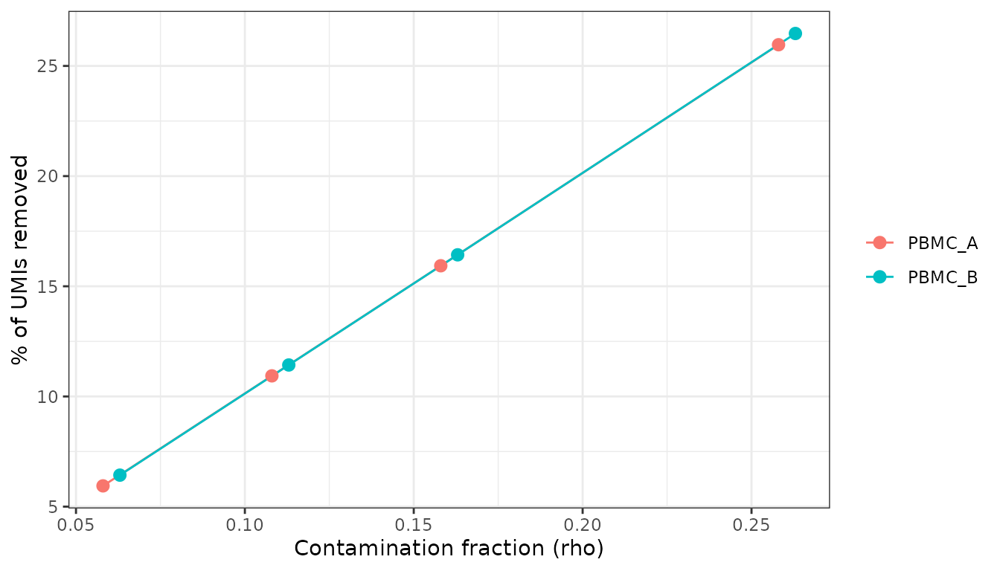
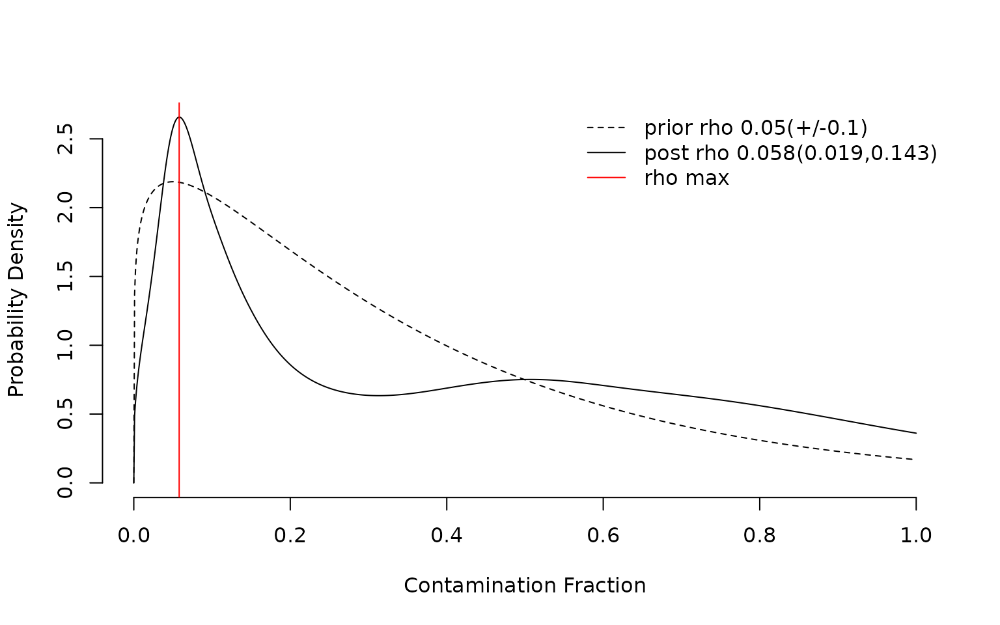
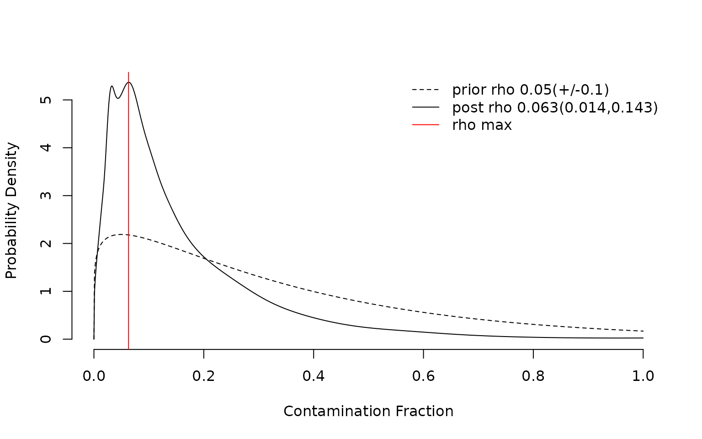
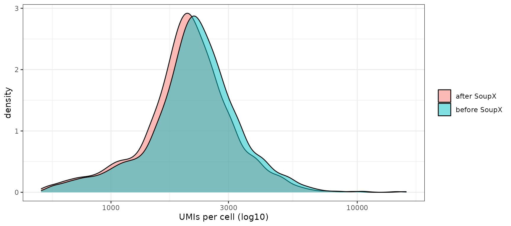

Ambient RNA Decontamination with SoupX
Chomchon Uansiri
2026-10-10
Source:vignettes/OHMmy-soupx-workflow.Rmd
OHMmy-soupx-workflow.RmdOverview
In droplet-based scRNA-seq, transcripts released by lysed cells form a “soup” that is captured in every droplet. This ambient RNA makes highly expressed genes, such as monocyte LYZ and S100A8/9 or haemoglobin, appear in unrelated cell types. SoupX estimates the soup profile from empty droplets, estimates the contamination fraction (rho) per sample, and subtracts the soup from each cell.
OHMmy wraps SoupX into a multi-sample pipeline that reads Cell Ranger output directories directly:
| Level | Functions |
|---|---|
| Building blocks |
get_sample_names(), load_counts(),
create_soup_channels(),
create_seurat_for_clustering(),
estimate_contamination(),
create_final_seurat()
|
| Two-stage pipeline |
prepare_soupx_inputs() (run once) +
run_soupx_post_clustering() (run per parameter
setting) |
| One-step wrapper | process_soupx_samples() |
| Hand-off to Seurat | addSoupXMetaToSeurat() |
1. Input data
OHMmy expects the standard Cell Ranger layout, with one folder per sample in each of two parent directories:
filtered/<sample>_filtered_feature_bc_matrix/{matrix.mtx.gz, features.tsv.gz, barcodes.tsv.gz}
raw/<sample>_raw_feature_bc_matrix/{matrix.mtx.gz, features.tsv.gz, barcodes.tsv.gz}pbmc3k is only distributed as a filtered matrix. To get a fully
reproducible example, make_mock_cellranger() (in
ohmmy-vignette-helpers.R) splits the pbmc3k cells into two
samples, PBMC_A and PBMC_B. For each sample it
writes a raw matrix that also contains 6,000 simulated
empty droplets, whose UMIs are drawn from the pooled expression
profile of that sample, which mimics how ambient RNA behaves.
cr <- make_mock_cellranger(file.path(tempdir(), "cellranger"))
list.files(dirname(cr$filtered_dir), recursive = TRUE)
#> [1] "filtered/PBMC_A_filtered_feature_bc_matrix/barcodes.tsv.gz"
#> [2] "filtered/PBMC_A_filtered_feature_bc_matrix/features.tsv.gz"
#> [3] "filtered/PBMC_A_filtered_feature_bc_matrix/matrix.mtx.gz"
#> [4] "filtered/PBMC_B_filtered_feature_bc_matrix/barcodes.tsv.gz"
#> [5] "filtered/PBMC_B_filtered_feature_bc_matrix/features.tsv.gz"
#> [6] "filtered/PBMC_B_filtered_feature_bc_matrix/matrix.mtx.gz"
#> [7] "raw/PBMC_A_raw_feature_bc_matrix/barcodes.tsv.gz"
#> [8] "raw/PBMC_A_raw_feature_bc_matrix/features.tsv.gz"
#> [9] "raw/PBMC_A_raw_feature_bc_matrix/matrix.mtx.gz"
#> [10] "raw/PBMC_B_raw_feature_bc_matrix/barcodes.tsv.gz"
#> [11] "raw/PBMC_B_raw_feature_bc_matrix/features.tsv.gz"
#> [12] "raw/PBMC_B_raw_feature_bc_matrix/matrix.mtx.gz"2. Step-by-step with the building blocks
Discover samples and load matrices
get_sample_names() derives sample IDs from the folder
names. load_counts() reads the filtered and raw matrices of
every sample.
samples <- get_sample_names(cr$filtered_dir)
counts <- load_counts(samples, filtered_dir = cr$filtered_dir, raw_dir = cr$raw_dir)Build SoupChannels and a quick clustering
create_soup_channels() pairs each raw matrix
(tod, all droplets) with its filtered matrix
(toc, cells). SoupX estimates contamination more reliably
with over-clustered cells, so
create_seurat_for_clustering() runs a fast standard Seurat
pipeline per sample at resolution 1.8.
soup_list <- create_soup_channels(counts$raw, counts$filtered, samples)
seurat_list <- create_seurat_for_clustering(counts$filtered, samples)Estimate and remove contamination
estimate_contamination() sets the clusters on each
channel, runs SoupX::autoEstCont() and adjusts the counts.
The contamination fraction can be raised on purpose with
mulFac, given as percentage points added
to the estimated rho:
-
manual = FALSE(default):mulFacis added for every sample; -
manual = TRUE:mulFacis added only for the samples listed inmanual_contam.
est_auto <- estimate_contamination(
soup_list, seurat_list, counts$filtered, samples,
mulFac = 0, methods = "subtraction"
)
# PBMC_B looks noisier: add 5 percentage points to its rho only
est_manual <- estimate_contamination(
soup_list, seurat_list, counts$filtered, samples,
mulFac = 5, manual = TRUE, manual_contam = "PBMC_B"
)
get_rho <- function(soup_objs) sapply(soup_objs, function(sc) unique(sc$metaData$rho))
rbind(auto = get_rho(est_auto$soup_list_all), selective = get_rho(est_manual$soup_list_all))
#> PBMC_A PBMC_B
#> auto 0.058 0.063
#> selective 0.058 0.113autoEstCont() estimates about 6 % contamination. The
selective override raises only PBMC_B. The estimated soup
profile shows which genes dominate the ambient pool:
sp <- est_auto$soup_list_all$PBMC_A$soupProfile
head(sp[order(-sp$est), ], 10)
#> est counts
#> MALAT1 0.025139447 3547
#> B2M 0.019419815 2740
#> TMSB4X 0.018952039 2674
#> RPL10 0.014061647 1984
#> RPL13 0.011935390 1684
#> RPL13A 0.011786552 1663
#> FTL 0.011772377 1661
#> RPS2 0.010149334 1432
#> RPS6 0.009773695 1379
#> RPS18 0.008894842 1255create_final_seurat() turns the corrected channels into
new Seurat objects (with min.cells = 3,
min.features = 200, and a mitoPercent
column):
clean_list <- create_final_seurat(est_auto$soup_list_all, samples)
clean_list
#> $PBMC_A
#> An object of class Seurat
#> 12337 features across 1326 samples within 1 assay
#> Active assay: RNA (12337 features, 0 variable features)
#> 1 layer present: counts
#>
#> $PBMC_B
#> An object of class Seurat
#> 12305 features across 1374 samples within 1 assay
#> Active assay: RNA (12305 features, 0 variable features)
#> 1 layer present: counts3. The two-stage pipeline
Loading, channel creation and clustering do not depend on the
contamination settings. prepare_soupx_inputs() therefore
bundles them and runs them once.
run_soupx_post_clustering() takes that bundle and only
performs estimation, correction and Seurat creation, so parameter sweeps
are cheap.
prep <- prepare_soupx_inputs(cr$filtered_dir, cr$raw_dir)
names(prep)
#> [1] "sample_names" "counts_lists" "soup_list"
#> [4] "seurat_for_clustering" "manual_contam"Here we sweep multiFac and record how many UMIs
remain:
sweep <- lapply(c(0, 5, 10, 20), function(mf) {
res <- run_soupx_post_clustering(prep, multiFac = mf, methods = "subtraction")
data.frame(
multiFac = mf,
sample = names(res$final_seurat),
rho = get_rho(res$soup_objects),
umis = sapply(res$final_seurat, function(x) sum(x$nCount_RNA))
)
})
sweep <- do.call(rbind, sweep)
raw_umis <- sapply(counts$filtered, sum)
sweep$pct_removed <- 100 * (1 - sweep$umis / raw_umis[sweep$sample])
sweep
#> multiFac sample rho umis pct_removed
#> PBMC_A 0 PBMC_A 0.058 3007505 5.942251
#> PBMC_B 0 PBMC_B 0.063 2987837 6.428975
#> PBMC_A1 5 PBMC_A 0.108 2847866 10.934856
#> PBMC_B1 5 PBMC_B 0.113 2828206 11.428188
#> PBMC_A2 10 PBMC_A 0.158 2688106 15.931245
#> PBMC_B2 10 PBMC_B 0.163 2668570 16.427559
#> PBMC_A3 20 PBMC_A 0.258 2367362 25.962304
#> PBMC_B3 20 PBMC_B 0.263 2347818 26.472650
ggplot(sweep, aes(rho, pct_removed, colour = sample)) +
geom_line() + geom_point(size = 2.5) +
labs(x = "Contamination fraction (rho)", y = "% of UMIs removed", colour = NULL) +
theme_bw()
Per-sample overrides
Giving manual_contam restricts the multiFac
penalty to those samples. All other samples keep their auto-estimated
rho:
override <- run_soupx_post_clustering(prep, multiFac = 10, manual_contam = "PBMC_B")
get_rho(override$soup_objects)
#> PBMC_A PBMC_B
#> 0.058 0.163One-step wrapper
When no parameter sweep is needed,
process_soupx_samples() runs both stages in a single call
and returns the same structure as
run_soupx_post_clustering():
one_step <- process_soupx_samples(cr$filtered_dir, cr$raw_dir, multiFac = 0)
names(one_step)
#> [1] "final_seurat" "soup_objects" "seurat_clustering"
get_rho(one_step$soup_objects)
#> PBMC_A PBMC_B
#> 0.058 0.0634. Transferring the cleaned counts to an existing object
Often an analysed Seurat object already exists, built from the
uncorrected counts. addSoupXMetaToSeurat() merges the
per-sample SoupX objects, prefixes the barcodes with the sample name and
removes the -1 suffix. It then replaces the
counts layer of the original object and updates
nCount_RNA, nFeature_RNA and
pct_counts_mt, keeping only cells and genes present in both
objects.
To show this, we build the “original” object with the same barcode
convention (<sample>_<barcode>):
original <- CreateSeuratObject(
do.call(cbind, lapply(samples, function(s) {
m <- counts$filtered[[s]]
colnames(m) <- paste0(s, "_", sub("-1$", "", colnames(m)))
m
})),
project = "pbmc3k_uncorrected"
)
original$sample <- sub("_.*$", "", colnames(original))
head(colnames(original), 3)
#> [1] "PBMC_A_AAACATTGAGCTAC" "PBMC_A_AAACATTGATCAGC" "PBMC_A_AAACCGTGTATGCG"
soupx_run <- run_soupx_post_clustering(prep, multiFac = 0)

corrected <- addSoupXMetaToSeurat(
original_seurat = original,
soupx_seurat_list = soupx_run$final_seurat,
mito_colname = "mitoPercent",
save_path = NULL # give a .rds path to save the result
)
corrected
#> An object of class Seurat
#> 13007 features across 2700 samples within 1 assay
#> Active assay: RNA (13007 features, 0 variable features)
#> 1 layer present: countsDid it work?
The clearest check is ambient monocyte transcripts in non-monocytes. We compare, before and after correction, the fraction of lymphocytes (cells with low LYZ + CD14 expression in a marker-based gate) that still contain monocyte-specific UMIs:
before <- LayerData(original, layer = "counts")
after <- LayerData(corrected, layer = "counts")
cells <- colnames(after)
before <- before[rownames(after), cells]
# gate: cells whose LYZ share is in the lower 70 % are treated as non-monocytes
lyz_share <- before["LYZ", ] / Matrix::colSums(before)
non_mono <- cells[lyz_share < quantile(lyz_share, 0.70)]
ambient_genes <- c("LYZ", "S100A8", "S100A9", "FTL")
detect <- function(m) 100 * Matrix::rowMeans(m[ambient_genes, non_mono] > 0)
data.frame(gene = ambient_genes,
pct_nonmono_before = round(detect(before), 1),
pct_nonmono_after = round(detect(after), 1))
#> gene pct_nonmono_before pct_nonmono_after
#> LYZ LYZ 43.4 3.2
#> S100A8 S100A8 9.4 0.6
#> S100A9 S100A9 16.3 1.0
#> FTL FTL 98.3 90.2
plot_df <- data.frame(
nCount = c(original$nCount_RNA[cells], corrected$nCount_RNA),
state = rep(c("before SoupX", "after SoupX"), each = length(cells))
)
ggplot(plot_df, aes(nCount, fill = state)) +
geom_density(alpha = 0.5) + scale_x_log10() +
labs(x = "UMIs per cell (log10)", fill = NULL) + theme_bw()
SoupX removes about 6 % of the UMIs, spread across all cells. Its
effect on the ambient transcripts is much larger: LYZ,
S100A8 and S100A9, which were detected in a large
share of non-monocytes before correction, almost disappear from them
afterwards. Ubiquitously expressed genes such as FTL are barely
affected, which is the intended behaviour. corrected can
now go into ProcessSeuratLOG() or
ProcessSeuratSCT(). See the article Data Processing,
Integration, and Clustering.
Session information
sessionInfo()
#> R version 4.6.1 (2026-06-24)
#> Platform: x86_64-pc-linux-gnu
#> Running under: Ubuntu 22.04.5 LTS
#>
#> Matrix products: default
#> BLAS: /usr/lib/x86_64-linux-gnu/openblas-pthread/libblas.so.3
#> LAPACK: /usr/lib/x86_64-linux-gnu/openblas-pthread/libopenblasp-r0.3.20.so; LAPACK version 3.10.0
#>
#> locale:
#> [1] LC_CTYPE=C.UTF-8 LC_NUMERIC=C LC_TIME=C.UTF-8
#> [4] LC_COLLATE=C.UTF-8 LC_MONETARY=C.UTF-8 LC_MESSAGES=C.UTF-8
#> [7] LC_PAPER=C.UTF-8 LC_NAME=C LC_ADDRESS=C
#> [10] LC_TELEPHONE=C LC_MEASUREMENT=C.UTF-8 LC_IDENTIFICATION=C
#>
#> time zone: UTC
#> tzcode source: system (glibc)
#>
#> attached base packages:
#> [1] stats graphics grDevices utils datasets methods base
#>
#> other attached packages:
#> [1] ggplot2_4.0.3 OHMmy_1.0.2.9000 Seurat_5.6.0 SeuratObject_5.4.0
#> [5] sp_2.2-3
#>
#> loaded via a namespace (and not attached):
#> [1] RColorBrewer_1.1-3 jsonlite_2.0.0 magrittr_2.0.5
#> [4] spatstat.utils_3.2-5 farver_2.1.2 rmarkdown_2.32
#> [7] fs_2.1.0 ragg_1.5.2 vctrs_0.7.3
#> [10] ROCR_1.0-12 memoise_2.0.1 spatstat.explore_3.8-3
#> [13] rstatix_1.1.0 htmltools_0.5.9 broom_1.0.13
#> [16] Formula_1.2-6 sass_0.4.10 sctransform_0.4.3
#> [19] parallelly_1.48.0 KernSmooth_2.23-26 bslib_0.12.0
#> [22] htmlwidgets_1.6.4 desc_1.4.3 ica_1.0-3
#> [25] plyr_1.8.9 plotly_4.12.1 zoo_1.9-1
#> [28] cachem_1.1.0 igraph_2.3.4 mime_0.13
#> [31] lifecycle_1.0.5 pkgconfig_2.0.3 Matrix_1.7-5
#> [34] R6_2.6.1 fastmap_1.2.0 fitdistrplus_1.2-6
#> [37] future_1.76.0 shiny_1.14.0 digest_0.6.39
#> [40] patchwork_1.3.2 tensor_1.5.1 RSpectra_0.16-2
#> [43] irlba_2.4.1 textshaping_1.0.5 ggpubr_1.0.0
#> [46] labeling_0.4.3 progressr_1.0.0 spatstat.sparse_3.2-0
#> [49] httr_1.4.9 polyclip_1.10-7 abind_1.4-8
#> [52] compiler_4.6.1 withr_3.0.3 S7_0.2.2
#> [55] backports_1.5.1 viridis_0.6.5 carData_3.0-6
#> [58] fastDummies_1.7.6 R.utils_2.13.0 ggforce_0.5.0
#> [61] ggsignif_0.6.4 MASS_7.3-65 tools_4.6.1
#> [64] lmtest_0.9-40 otel_0.2.0 httpuv_1.6.17
#> [67] future.apply_1.20.2 goftest_1.2-3 R.oo_1.27.1
#> [70] glue_1.8.1 nlme_3.1-169 promises_1.5.0
#> [73] grid_4.6.1 Rtsne_0.17 cluster_2.1.8.2
#> [76] reshape2_1.4.5 generics_0.1.4 gtable_0.3.6
#> [79] spatstat.data_3.1-9 R.methodsS3_1.8.2 tidyr_1.3.2
#> [82] data.table_1.18.6.1 tidygraph_1.3.1 car_3.1-5
#> [85] spatstat.geom_3.8-3 RcppAnnoy_0.0.23 ggrepel_0.9.8
#> [88] RANN_2.6.3 pillar_1.11.1 stringr_1.6.0
#> [91] spam_2.11-4 RcppHNSW_0.7.0 later_1.4.8
#> [94] splines_4.6.1 tweenr_2.0.3 dplyr_1.2.1
#> [97] lattice_0.22-9 survival_3.8-6 deldir_2.0-4
#> [100] tidyselect_1.2.1 miniUI_0.1.2 pbapply_1.7-5
#> [103] knitr_1.52 gridExtra_2.3.1 SoupX_1.6.2
#> [106] scattermore_1.2 xfun_0.61 graphlayouts_1.2.5
#> [109] matrixStats_1.5.0 leidenbase_0.1.37 stringi_1.8.9
#> [112] yaml_2.3.12 evaluate_1.0.5 codetools_0.2-20
#> [115] ggraph_2.2.2 tibble_3.3.1 cli_3.6.6
#> [118] uwot_0.2.5 xtable_1.8-8 reticulate_1.47.0
#> [121] systemfonts_1.3.2 jquerylib_0.1.4 Rcpp_1.1.2
#> [124] globals_0.19.1 spatstat.random_3.5-2 png_0.1-9
#> [127] spatstat.univar_3.2-0 parallel_4.6.1 pkgdown_2.2.1
#> [130] dotCall64_1.2 listenv_1.1.0 viridisLite_0.4.3
#> [133] scales_1.4.0 ggridges_0.5.7 purrr_1.2.2
#> [136] rlang_1.3.0 cowplot_1.2.0